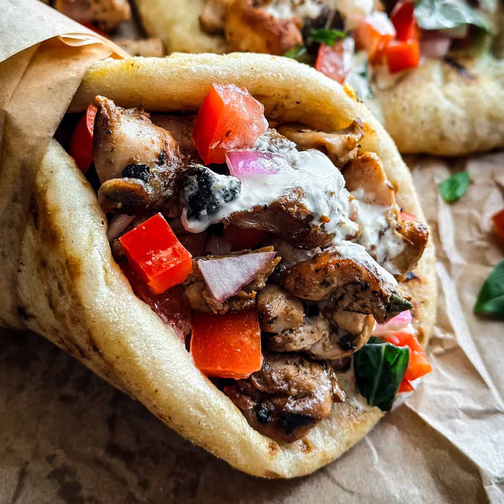

Gyros

Description
Gyros is a popular Greek dish made of meat cooked on a vertical rotisserie, traditionally pork or chicken,
served wrapped in pita bread with tomato, onion, and tzatziki sauce.
The name "gyros" means "turn" or "revolution," referring to the rotating cooking method. It is similar to the
Turkish döner kebab and the Middle Eastern shawarma.
Ingredients
- 500g pork shoulder or chicken thighs, thinly sliced
- 2 cloves garlic, minced
- 2 tsp dried oregano
- 1 tsp ground cumin
- 1 tsp paprika
- Juice of 1 lemon
- 3 tbsp olive oil
- Salt and pepper to taste
- Pita bread, sliced tomato, sliced onion, tzatziki sauce for serving
Steps
- In a bowl, combine garlic, oregano, cumin, paprika, lemon juice, olive oil, salt, and pepper.
- Add the sliced meat and marinate for at least 1 hour, preferably overnight.
- Heat a grill or skillet over medium-high heat and cook the meat until browned and cooked through.
- Warm the pita bread slightly on the grill or in the oven.
- Assemble the gyros by placing cooked meat on the pita, adding tomato, onion, and a generous amount of
tzatziki sauce.
- Wrap the pita around the fillings and serve immediately.
Back to Home